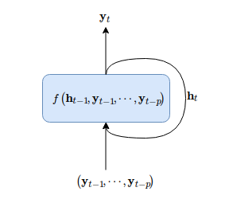
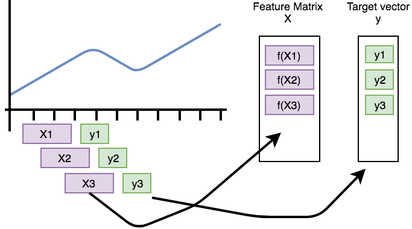

一文搞懂时间序列多步预测的原理
理解时间序列多步预测三种方法（多图）
时间序列多步预测指的是根据现有数据训练一个模型去预测未来若干时间步的取值。
基本原理
完成时间序列的多步预测需要三个步骤：
- 数据预处理实现，关注数据的清洗、变换等
- 预测模型的实现、训练、优化，根据场景需求而定，模型可能是机器学习模型，也可能是深度学习模型。不存在通用的模型能满足所有的场景。预测结果的好坏取决于模型的实现、训练优化。
- 多步预测算法的实现。
第一第二步都是机器学习深度学习任务的必备，这里的关键是第三步。时间序列多步预测（forecasting）有三种方法：
- 以时间为自变量的线性外推
- 自回归（如RNN、AR模型、滑动窗口）
- 概率化自回归，对连续数据离散化，训练概率模型，并使用一定的技巧如beam search搜索多步预测结果
以时间为自变量的外推
时间外推方法，建立当前时间戳到与之对应的取值的映射，假设有时间序列样本$[y_0, y_1, \dots, y_T]$，以时间戳$t$作为变量，寻找如下模型
最简单的就是线性模型，
更复杂点的模型如，
通常以时间为自变量的模型都会把趋势、季节性周期因素分解，即如下形式
对于时间戳$T$之外的预测，直接使用模型$f(t)$外推即可，
以时间为自变量的外推的方法的一个好处是多步预测时可以同时计算$[f(T+1), f(T+2), \dots , f(T+m)]$，Facebook Prophet 就是这类模型。
时间外推法有很大的局限性，仅能捕捉到时序中的长期依赖关系，对于局部依赖无法很好建模，并且不是所有数据都满足线性外推假设，比如有效市场的资产价格时间序列。
自回归方法
自回归类方法假定时间序列样本$[y_0, y_1, \dots, y_T]$，满足如下关系
这里的$s$表示窗口大小。该模型建立历史值与当前值的映射关系，是对数据局部关系的很好描述。
例如AR模型，线性自回归模型使用历史数据的线性组合来表示当前的取值，
考虑到模型需要保存内部状态，那么可以表示为，
画图表示为，

对于时间戳$T$之外的预测，使用递归的方式逐步预测，
自回归方法的一个不足之处是多步预测必须要顺时间递归完成。即完成$y_{T+1}$的预测后，才能继续预测$y_{T+2}$的预测，以此类推。当然，这也没什么好说的，这是所有递归模型的问题，包括LSTM、GRU等等。
概率化自回归
概率化自回归是对连续变量$y_t$离散化后，构建概率化预测模型的方法。首先要对连续变量$y_t$离散化，这点怎么操作呢？假设连续变量$y_t$的取值区间为$[-1, 1]$，然后对该区间分桶（即bins），接着对各个桶从左到有编号$0, 1, 2, \dots$。这个编号相当于NLP中的字ID，这时候$y_t$对应着它所在的桶的编号$Y_t$。
Numpy下的实践，
1 | >>> bins = np.linspace(0, 1, 10) |
于是，接下来的思路就和NLP中的序列生成seq2seq一致。概率自回归模型，
其中训练序列为$S$，预测序列为$Y$的观察概率。然后多步预测时使用beam search搜索。
滑动窗口自回归
以上我们介绍了三种时间序列多步预测方法，这里详细深入基于滑动窗口自回归的方法。
转化为带标注数据
时间序列数据没有带标注，而带监督的机器学习学习模型的训练需要定义输入与输出，那么怎么把时间序列数据转化为带标注的形式呢？
首先把原始序列（预处理后）化成带标注形式，从自会回出发，时序之间存在自回归关系。那么，我们可以把它转化为带标注形式的数据：

图中的样本$X_t$是模型的输入，有时间戳$t$及其之前$s$大小窗口内的元素决定，
模型输入$X_t$对应输出$y_{t+1}$，即
这种方法在 seq2seq 任务中，训练 RNN 神经网络称为 forcing teaching。我们称它为自监督标注。这种做法在 NLP 中训练 RNN 十分普遍，只不过我们把它引入到时序预测中。时间窗口的大小以超参数的形式存在，也可以考虑自动化地确定时间窗口的大小。
模型训练
对于窗口大小为s的样本，模型$f$学习窗口内数据到下一个时间步的映射，
在给定训练技巧下，获得满足交叉验证的模型后就可以进行时间序列多步预测。
递归多步预测
预测时，通过滑动一个固定的窗口完成多步预测，

如果使用的预测模型是神经网络，则没有显式的特征计算过程。
借用deepmind wavenet 中一动画更直观理解多步预测，

实现
有关的实现更新到这里：https://github.com/allenwind/time-series-forecast ，基于该框架的一些预测实例，
以上实现可能会根据情况更新调整~
总结
本文简单分享了时间序列多步预测的思路，并提供了实现。
转载请包括本文地址：https://allenwind.github.io/blog/11389
更多文章请参考：https://allenwind.github.io/blog/archives/